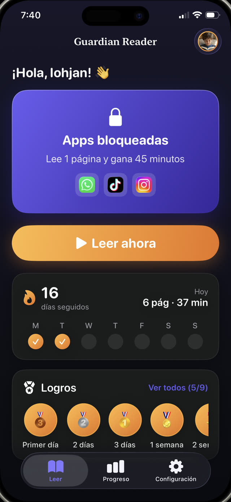
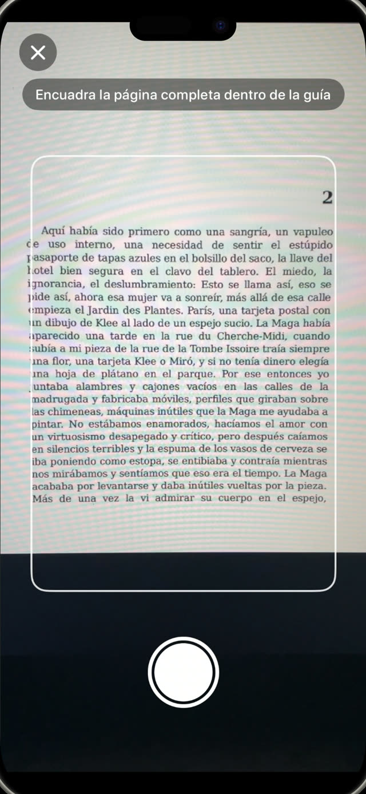
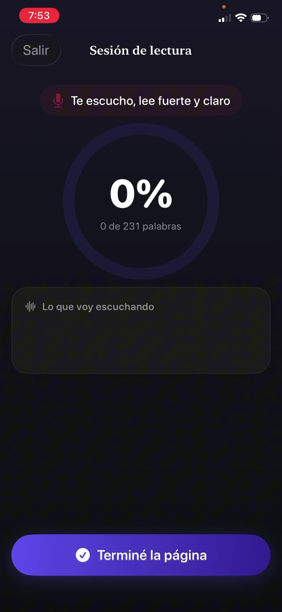
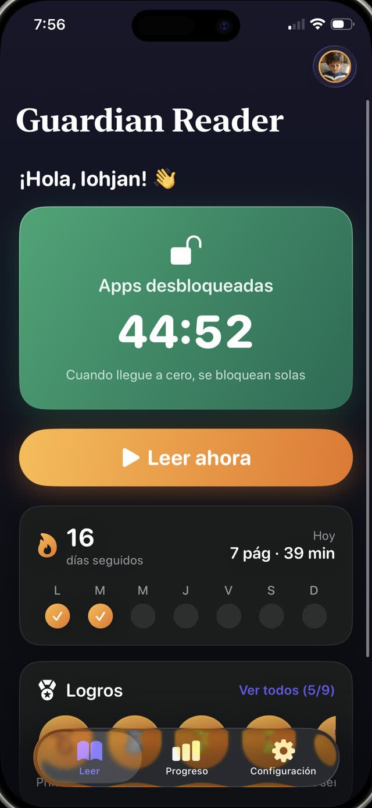
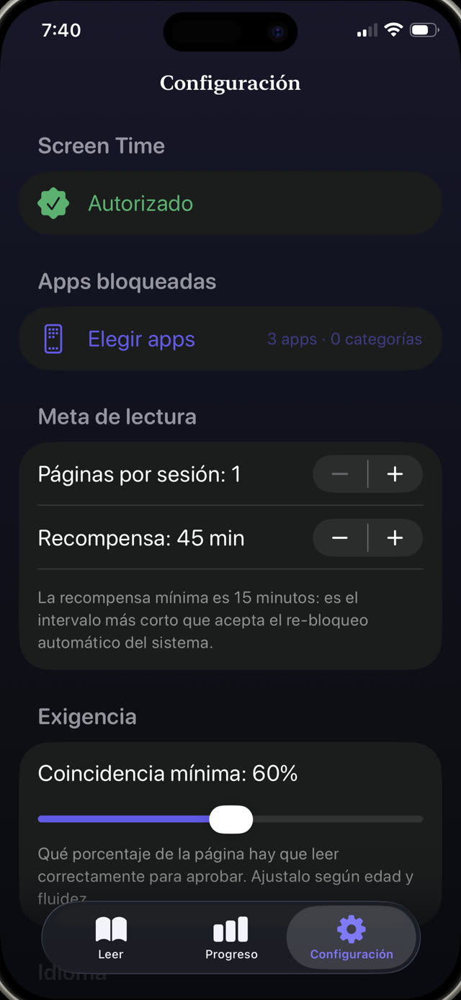
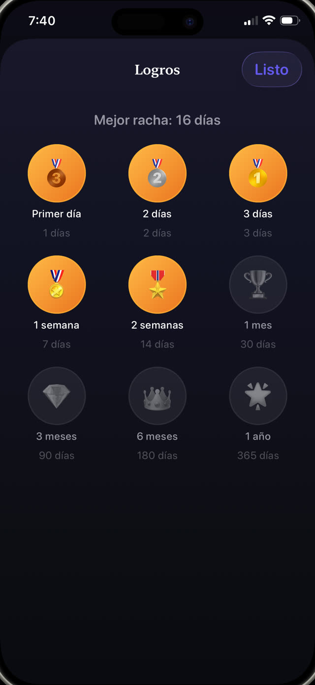
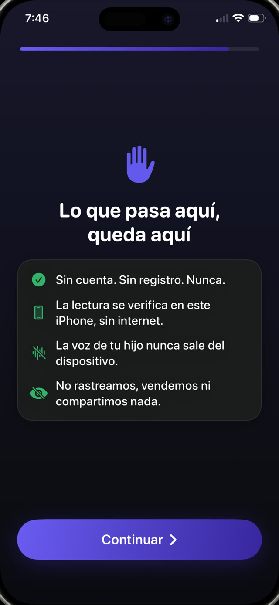

El control parental que escucha a tus hijos leer.
Guardian Reader bloquea las apps que elijas. Tu hijo lee un libro de verdad en voz alta, el iPhone verifica cada palabra, y se desbloquea el tiempo de pantalla que se ganó. Sin fuerza de voluntad, ni la suya ni la tuya.
Gratis · Para el iPhone del chico, iOS 18+ · Sin cuentas ni rastreo · 9 idiomas


Leer para jugar.
Guardian Reader pone un libro de verdad entre tu hijo y sus apps. Unas páginas leídas en voz alta, verificadas palabra por palabra, y la pantalla se abre.
iPhone · iOS 18+ · Gratis: lectura verificada + una app bloqueada · Premium con 7 días de prueba
Dentro de la app
Bloquea apps hasta que la lectura esté hecha.
Un control parental y un entrenador de lectura en uno. Tu hijo la usa solo; el que controla es el iPhone.
Verificación en vivo
Mira cómo verifica, palabra por palabra.
Mientras tu hijo lee en voz alta, la app compara lo que oye con las páginas escaneadas y el porcentaje sube en vivo. Esta es una sesión real, leyéndole un libro de papel a un iPhone. Leer de verdad queda muy por encima del mínimo; hablar de otra cosa queda cerca de cero.
Leer en voz alta es el ejercicio →
Escanea las páginas
Cualquier libro de papel se vuelve la llave.
Tu hijo fotografía todas las páginas que va a leer, una foto por página, y después las lee todas de corrido, como un libro de verdad. Solo cuenta el texto dentro de la guía de encuadre, y una página ya escaneada en esa sesión se rechaza automáticamente.
Cómo lograr que tus hijos lean más →
Anti-trampa
Detecta los atajos que los chicos realmente usan.
Sin un quiz que se pueda adivinar, sin sistema de confianza. Lo que dice se compara contra las páginas exactas que escaneó, en orden, así que hojear, improvisar o decir que ya está no aprueba. Los tropiezos y errores chicos sí: verifica que leyó, no que fue perfecto. Con un control defines qué tan exigente es el mínimo.
Cómo funciona ganar pantalla →
La recompensa
Aprueba la lectura. Desbloquea el teléfono.
Las apps se abren por los minutos exactos que ganó, con una cuenta regresiva a la vista. Cuando llega a cero se bloquean solas: lo aplica el sistema Screen Time de Apple, aunque Guardian Reader esté cerrada.
Cómo limitar YouTube y TikTok →
Reglas del padre
Tú pones el precio del canje.
Páginas que entran, minutos que salen: una página gana unos 15 minutos de los 4 a los 6 años, hasta cuatro páginas por unos 45 minutos para adolescentes. El plan sugiere un punto de partida según la edad, y cada número se cambia detrás de un PIN parental distinto del código del teléfono.
Reglas de pantalla que funcionan de verdad →
Progreso y rachas
Medallas que los hacen volver.
Rachas, estrellas y medallas para el chico; páginas por día, mes y año para ti. Premium agrega un reporte en PDF de cada sesión: fecha, minutos, porcentaje y el texto que leyó de verdad, listo para darle a la maestra.
Un registro de lectura escolar →
Privada por diseño
Un micrófono apuntando a un chico tiene que dar explicaciones.
La cámara lee la página, el micrófono transcribe la lectura, y los dos trabajan solo en el dispositivo. Sin cuenta, sin servidor, sin analytics, sin SDKs de terceros: la voz nunca sale del iPhone, y todo funciona sin internet.
Lee la política de privacidad completa →How it works
Cuatro pasos. Nada que negociar.
Configuralo una vez con tu hijo. Después el trato funciona solo: el límite vive en la app, no en tu voz.
Bloquea las apps
Elige las apps o categorías enteras a bloquear, como YouTube, TikTok o juegos, y protege la configuración con tu PIN parental.
Escanea las páginas
Tu hijo fotografía las páginas del libro de verdad que va a leer, una foto por página.
Lee en voz alta
Lee todo de corrido mientras el iPhone escucha y verifica cada palabra contra el texto escaneado.
Se desbloquea la pantalla
Si aprueba, las apps se abren por los minutos ganados. Al llegar a cero, se bloquean solas.
Guides
Ayuda para lo difícil.
Guías prácticas sobre tiempo de pantalla, bloquear apps y lograr que los chicos lean, y cómo usar Guardian Reader en cada una.
Cómo lograr que tus hijos lean más
Siete enfoques que funcionan con un chico que prefiere la pantalla, y el que no te pide fuerza de voluntad.
Leer la guía PantallaCómo pueden ganar pantalla leyendo
Convertir la pantalla en algo que se gana en vez de algo dado, y cómo sostener la regla sin vigilarla.
Leer la guía Control parentalCómo bloquear apps en el iPhone de tu hijo
Qué puede y qué no puede Screen Time, dónde encuentran los huecos los chicos, y cómo cerrarlos de una vez.
Leer la guía YouTube · TikTokCómo limitar YouTube y TikTok
Por qué los límites de tiempo solos fallan contra los feeds infinitos, y qué poner delante de la app.
Leer la guía FluidezPráctica de fluidez lectora en casa
Qué quieren decir los maestros con fluidez, por qué leer en voz alta es el ejercicio, y cómo meter diez minutos en una tarde normal.
Leer la guía Reglas familiaresReglas de pantalla que funcionan de verdad
Por qué la mayoría de las reglas familiares se caen en dos semanas, y las tres propiedades que comparten las que sobreviven.
Leer la guíaFAQ
Preguntas, respondidas.
¿Cómo verifica que mi hijo leyó de verdad?
¿Puede hacer trampa fingiendo que lee?
¿Puede una voz de IA leer la página en lugar de mi hijo?
¿La instalo en mi teléfono o en el de mi hijo?
¿Qué apps puedo bloquear?
¿Graba la voz de mi hijo?
¿Qué libros sirven?
¿Para qué edades es?
¿Cuánto cuesta?
¿Puedo tener un registro de lectura para la escuela?
¿Funciona sin internet?
¿Puede desinstalarla o cambiar la configuración?
Esta noche, primero se lee.
Dos minutos de configuración. Tu hijo lee en voz alta, se gana su pantalla, y dejas de ser el malo de la película.
Descargar en elApp StoreGratis · Sin anuncios, sin cuentas, sin rastreo